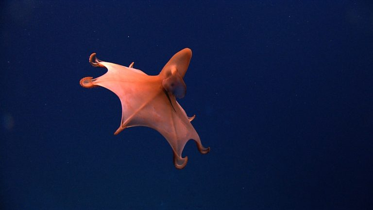

На дне: диковинные морские обитатели
Исследователи глубоководной экосистемы и дна Атлантического океана сделали серию изображений подводных созданий с самой что ни на есть инопланетной внешностью.

Экзотические представители морской фауны были сняты на глубине более тысячи метров дистанционно управляемым аппаратом в рамках работы научной группы, исследования которой финансирует Национальное управление океанических и атмосферных исследований (NOAA).